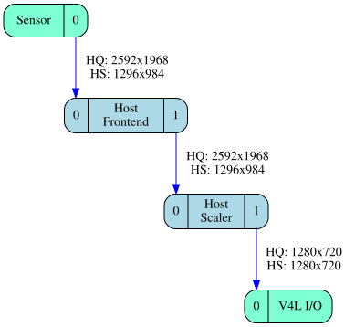
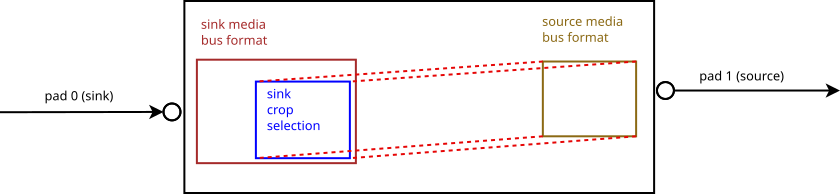
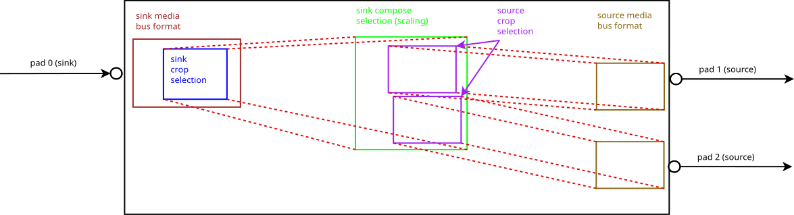
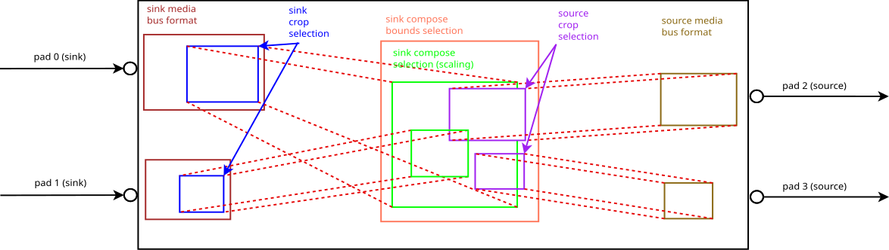

4.13. Sub-device Interface¶
The complex nature of V4L2 devices, where hardware is often made of several integrated circuits that need to interact with each other in a controlled way, leads to complex V4L2 drivers. The drivers usually reflect the hardware model in software, and model the different hardware components as software blocks called sub-devices.
V4L2 sub-devices are usually kernel-only objects. If the V4L2 driver implements the media device API, they will automatically inherit from media entities. Applications will be able to enumerate the sub-devices and discover the hardware topology using the media entities, pads and links enumeration API.
In addition to make sub-devices discoverable, drivers can also choose to make them directly configurable by applications. When both the sub-device driver and the V4L2 device driver support this, sub-devices will feature a character device node on which ioctls can be called to
query, read and write sub-devices controls
subscribe and unsubscribe to events and retrieve them
negotiate image formats on individual pads
inspect and modify internal data routing between pads of the same entity
Sub-device character device nodes, conventionally named
/dev/v4l-subdev*, use major number 81.
Drivers may opt to limit the sub-device character devices to only expose
operations that do not modify the device state. In such a case the sub-devices
are referred to as read-only in the rest of this documentation, and the
related restrictions are documented in individual ioctls.
4.13.1. Controls¶
Most V4L2 controls are implemented by sub-device hardware. Drivers usually merge all controls and expose them through video device nodes. Applications can control all sub-devices through a single interface.
Complex devices sometimes implement the same control in different pieces of hardware. This situation is common in embedded platforms, where both sensors and image processing hardware implement identical functions, such as contrast adjustment, white balance or faulty pixels correction. As the V4L2 controls API doesn’t support several identical controls in a single device, all but one of the identical controls are hidden.
Applications can access those hidden controls through the sub-device node with the V4L2 control API described in User Controls. The ioctls behave identically as when issued on V4L2 device nodes, with the exception that they deal only with controls implemented in the sub-device.
Depending on the driver, those controls might also be exposed through one (or several) V4L2 device nodes.
4.13.2. Events¶
V4L2 sub-devices can notify applications of events as described in Event Interface. The API behaves identically as when used on V4L2 device nodes, with the exception that it only deals with events generated by the sub-device. Depending on the driver, those events might also be reported on one (or several) V4L2 device nodes.
4.13.3. Pad-level Formats¶
Warning
Pad-level formats are only applicable to very complex devices that need to expose low-level format configuration to user space. Generic V4L2 applications do not need to use the API described in this section.
Note
For the purpose of this section, the term format means the combination of media bus data format, frame width and frame height.
Image formats are typically negotiated on video capture and output devices using the format and selection ioctls. The driver is responsible for configuring every block in the video pipeline according to the requested format at the pipeline input and/or output.
For complex devices, such as often found in embedded systems, identical image sizes at the output of a pipeline can be achieved using different hardware configurations. One such example is shown on Image Format Negotiation on Pipelines, where image scaling can be performed on both the video sensor and the host image processing hardware.

Image Format Negotiation on Pipelines¶
High quality and high speed pipeline configuration
The sensor scaler is usually of less quality than the host scaler, but scaling on the sensor is required to achieve higher frame rates. Depending on the use case (quality vs. speed), the pipeline must be configured differently. Applications need to configure the formats at every point in the pipeline explicitly.
Drivers that implement the media API can expose pad-level image format configuration to applications. When they do, applications can use the VIDIOC_SUBDEV_G_FMT and VIDIOC_SUBDEV_S_FMT ioctls. to negotiate formats on a per-pad basis.
Applications are responsible for configuring coherent parameters on the
whole pipeline and making sure that connected pads have compatible
formats. The pipeline is checked for formats mismatch at
VIDIOC_STREAMON time, and an EPIPE error
code is then returned if the configuration is invalid.
Pad-level image format configuration support can be tested by calling
the ioctl VIDIOC_SUBDEV_G_FMT, VIDIOC_SUBDEV_S_FMT ioctl on pad
0. If the driver returns an EINVAL error code pad-level format
configuration is not supported by the sub-device.
4.13.3.1. Format Negotiation¶
Acceptable formats on pads can (and usually do) depend on a number of external parameters, such as formats on other pads, active links, or even controls. Finding a combination of formats on all pads in a video pipeline, acceptable to both application and driver, can’t rely on formats enumeration only. A format negotiation mechanism is required.
Central to the format negotiation mechanism are the get/set format
operations. When called with the which argument set to
V4L2_SUBDEV_FORMAT_TRY, the
VIDIOC_SUBDEV_G_FMT and
VIDIOC_SUBDEV_S_FMT ioctls operate on
a set of formats parameters that are not connected to the hardware
configuration. Modifying those ‘try’ formats leaves the device state
untouched (this applies to both the software state stored in the driver
and the hardware state stored in the device itself).
While not kept as part of the device state, try formats are stored in the sub-device file handles. A VIDIOC_SUBDEV_G_FMT call will return the last try format set on the same sub-device file handle. Several applications querying the same sub-device at the same time will thus not interact with each other.
To find out whether a particular format is supported by the device,
applications use the
VIDIOC_SUBDEV_S_FMT ioctl. Drivers
verify and, if needed, change the requested format based on device
requirements and return the possibly modified value. Applications can
then choose to try a different format or accept the returned value and
continue.
Formats returned by the driver during a negotiation iteration are guaranteed to be supported by the device. In particular, drivers guarantee that a returned format will not be further changed if passed to an VIDIOC_SUBDEV_S_FMT call as-is (as long as external parameters, such as formats on other pads or links’ configuration are not changed).
Drivers automatically propagate formats inside sub-devices. When a try or active format is set on a pad, corresponding formats on other pads of the same sub-device can be modified by the driver. Drivers are free to modify formats as required by the device. However, they should comply with the following rules when possible:
Formats should be propagated from sink pads to source pads. Modifying a format on a source pad should not modify the format on any sink pad.
Sub-devices that scale frames using variable scaling factors should reset the scale factors to default values when sink pads formats are modified. If the 1:1 scaling ratio is supported, this means that source pads formats should be reset to the sink pads formats.
Formats are not propagated across links, as that would involve propagating them from one sub-device file handle to another. Applications must then take care to configure both ends of every link explicitly with compatible formats. Identical formats on the two ends of a link are guaranteed to be compatible. Drivers are free to accept different formats matching device requirements as being compatible.
Sample Pipeline Configuration shows a sample configuration sequence for the pipeline described in Image Format Negotiation on Pipelines (table columns list entity names and pad numbers).
Sensor/0 format |
Frontend/0 format |
Frontend/1 format |
Scaler/0 format |
Scaler/0 compose selection rectangle |
Scaler/1 format |
|
|---|---|---|---|---|---|---|
Initial state |
2048x1536 SGRBG8_1X8 |
(default) |
(default) |
(default) |
(default) |
(default) |
Configure frontend sink format |
2048x1536 SGRBG8_1X8 |
2048x1536 SGRBG8_1X8 |
2046x1534 SGRBG8_1X8 |
(default) |
(default) |
(default) |
Configure scaler sink format |
2048x1536 SGRBG8_1X8 |
2048x1536 SGRBG8_1X8 |
2046x1534 SGRBG8_1X8 |
2046x1534 SGRBG8_1X8 |
0,0/2046x1534 |
2046x1534 SGRBG8_1X8 |
Configure scaler sink compose selection |
2048x1536 SGRBG8_1X8 |
2048x1536 SGRBG8_1X8 |
2046x1534 SGRBG8_1X8 |
2046x1534 SGRBG8_1X8 |
0,0/1280x960 |
1280x960 SGRBG8_1X8 |
Initial state. The sensor source pad format is set to its native 3MP size and V4L2_MBUS_FMT_SGRBG8_1X8 media bus code. Formats on the host frontend and scaler sink and source pads have the default values, as well as the compose rectangle on the scaler’s sink pad.
The application configures the frontend sink pad format’s size to 2048x1536 and its media bus code to V4L2_MBUS_FMT_SGRBG_1X8. The driver propagates the format to the frontend source pad.
The application configures the scaler sink pad format’s size to 2046x1534 and the media bus code to V4L2_MBUS_FMT_SGRBG_1X8 to match the frontend source size and media bus code. The media bus code on the sink pad is set to V4L2_MBUS_FMT_SGRBG_1X8. The driver propagates the size to the compose selection rectangle on the scaler’s sink pad, and the format to the scaler source pad.
The application configures the size of the compose selection rectangle of the scaler’s sink pad 1280x960. The driver propagates the size to the scaler’s source pad format.
When satisfied with the try results, applications can set the active
formats by setting the which argument to
V4L2_SUBDEV_FORMAT_ACTIVE. Active formats are changed exactly as try
formats by drivers. To avoid modifying the hardware state during format
negotiation, applications should negotiate try formats first and then
modify the active settings using the try formats returned during the
last negotiation iteration. This guarantees that the active format will
be applied as-is by the driver without being modified.
4.13.3.2. Selections: cropping, scaling and composition¶
Many sub-devices support cropping frames on their input or output pads (or possible even on both). Cropping is used to select the area of interest in an image, typically on an image sensor or a video decoder. It can also be used as part of digital zoom implementations to select the area of the image that will be scaled up.
Crop settings are defined by a crop rectangle and represented in a
struct v4l2_rect by the coordinates of the top
left corner and the rectangle size. Both the coordinates and sizes are
expressed in pixels.
As for pad formats, drivers store try and active rectangles for the selection targets Common selection definitions.
On sink pads, cropping is applied relative to the current pad format. The pad format represents the image size as received by the sub-device from the previous block in the pipeline, and the crop rectangle represents the sub-image that will be transmitted further inside the sub-device for processing.
The scaling operation changes the size of the image by scaling it to new
dimensions. The scaling ratio isn’t specified explicitly, but is implied
from the original and scaled image sizes. Both sizes are represented by
struct v4l2_rect.
Scaling support is optional. When supported by a subdev, the crop
rectangle on the subdev’s sink pad is scaled to the size configured
using the
VIDIOC_SUBDEV_S_SELECTION IOCTL
using V4L2_SEL_TGT_COMPOSE selection target on the same pad. If the
subdev supports scaling but not composing, the top and left values are
not used and must always be set to zero.
On source pads, cropping is similar to sink pads, with the exception that the source size from which the cropping is performed, is the COMPOSE rectangle on the sink pad. In both sink and source pads, the crop rectangle must be entirely contained inside the source image size for the crop operation.
The drivers should always use the closest possible rectangle the user
requests on all selection targets, unless specifically told otherwise.
V4L2_SEL_FLAG_GE and V4L2_SEL_FLAG_LE flags may be used to round
the image size either up or down. Selection flags
4.13.3.3. Types of selection targets¶
4.13.3.3.1. Actual targets¶
Actual targets (without a postfix) reflect the actual hardware configuration at any point of time. There is a BOUNDS target corresponding to every actual target.
4.13.3.3.2. BOUNDS targets¶
BOUNDS targets is the smallest rectangle that contains all valid actual rectangles. It may not be possible to set the actual rectangle as large as the BOUNDS rectangle, however. This may be because e.g. a sensor’s pixel array is not rectangular but cross-shaped or round. The maximum size may also be smaller than the BOUNDS rectangle.
4.13.3.4. Order of configuration and format propagation¶
Inside subdevs, the order of image processing steps will always be from
the sink pad towards the source pad. This is also reflected in the order
in which the configuration must be performed by the user: the changes
made will be propagated to any subsequent stages. If this behaviour is
not desired, the user must set V4L2_SEL_FLAG_KEEP_CONFIG flag. This
flag causes no propagation of the changes are allowed in any
circumstances. This may also cause the accessed rectangle to be adjusted
by the driver, depending on the properties of the underlying hardware.
The coordinates to a step always refer to the actual size of the previous step. The exception to this rule is the sink compose rectangle, which refers to the sink compose bounds rectangle --- if it is supported by the hardware.
Sink pad format. The user configures the sink pad format. This format defines the parameters of the image the entity receives through the pad for further processing.
Sink pad actual crop selection. The sink pad crop defines the crop performed to the sink pad format.
Sink pad actual compose selection. The size of the sink pad compose rectangle defines the scaling ratio compared to the size of the sink pad crop rectangle. The location of the compose rectangle specifies the location of the actual sink compose rectangle in the sink compose bounds rectangle.
Source pad actual crop selection. Crop on the source pad defines crop performed to the image in the sink compose bounds rectangle.
Source pad format. The source pad format defines the output pixel format of the subdev, as well as the other parameters with the exception of the image width and height. Width and height are defined by the size of the source pad actual crop selection.
Accessing any of the above rectangles not supported by the subdev will
return EINVAL. Any rectangle referring to a previous unsupported
rectangle coordinates will instead refer to the previous supported
rectangle. For example, if sink crop is not supported, the compose
selection will refer to the sink pad format dimensions instead.

Figure 4.5. Image processing in subdevs: simple crop example¶
In the above example, the subdev supports cropping on its sink pad. To configure it, the user sets the media bus format on the subdev’s sink pad. Now the actual crop rectangle can be set on the sink pad --- the location and size of this rectangle reflect the location and size of a rectangle to be cropped from the sink format. The size of the sink crop rectangle will also be the size of the format of the subdev’s source pad.

Figure 4.6. Image processing in subdevs: scaling with multiple sources¶
In this example, the subdev is capable of first cropping, then scaling and finally cropping for two source pads individually from the resulting scaled image. The location of the scaled image in the cropped image is ignored in sink compose target. Both of the locations of the source crop rectangles refer to the sink scaling rectangle, independently cropping an area at location specified by the source crop rectangle from it.

Figure 4.7. Image processing in subdevs: scaling and composition with multiple sinks and sources¶
The subdev driver supports two sink pads and two source pads. The images from both of the sink pads are individually cropped, then scaled and further composed on the composition bounds rectangle. From that, two independent streams are cropped and sent out of the subdev from the source pads.
4.13.3.5. Streams, multiplexed media pads and internal routing¶
Simple V4L2 sub-devices do not support multiple, unrelated video streams, and only a single stream can pass through a media link and a media pad. Thus each pad contains a format and selection configuration for that single stream. A subdev can do stream processing and split a stream into two or compose two streams into one, but the inputs and outputs for the subdev are still a single stream per pad.
Some hardware, e.g. MIPI CSI-2, support multiplexed streams, that is, multiple data streams are transmitted on the same bus, which is represented by a media link connecting a transmitter source pad with a sink pad on the receiver. For example, a camera sensor can produce two distinct streams, a pixel stream and a metadata stream, which are transmitted on the multiplexed data bus, represented by a media link which connects the single sensor’s source pad with the receiver sink pad. The stream-aware receiver will de-multiplex the streams received on the its sink pad and allows to route them individually to one of its source pads.
Subdevice drivers that support multiplexed streams are compatible with non-multiplexed subdev drivers. However, if the driver at the sink end of a link does not support streams, then only stream 0 of source end may be captured. There may be additional limitations specific to the sink device.
4.13.3.5.1. Understanding streams¶
A stream is a stream of content (e.g. pixel data or metadata) flowing through the media pipeline from a source (e.g. a sensor) towards the final sink (e.g. a receiver and demultiplexer in a SoC). Each media link carries all the enabled streams from one end of the link to the other, and sub-devices have routing tables which describe how the incoming streams from sink pads are routed to the source pads.
A stream ID is a media pad-local identifier for a stream. Streams IDs of the same stream must be equal on both ends of a link. In other words, a particular stream ID must exist on both sides of a media link, but another stream ID can be used for the same stream at the other side of the sub-device.
A stream at a specific point in the media pipeline is identified by the sub-device and a (pad, stream) pair. For sub-devices that do not support multiplexed streams the ‘stream’ field is always 0.
4.13.3.5.2. Interaction between routes, streams, formats and selections¶
The addition of streams to the V4L2 sub-device interface moves the sub-device formats and selections from pads to (pad, stream) pairs. Besides the usual pad, also the stream ID needs to be provided for setting formats and selections. The order of configuring formats and selections along a stream is the same as without streams (see Order of configuration and format propagation).
Instead of the sub-device wide merging of streams from all sink pads towards all source pads, data flows for each route are separate from each other. Any number of routes from streams on sink pads towards streams on source pads is allowed, to the extent supported by drivers. For every stream on a source pad, however, only a single route is allowed.
Any configurations of a stream within a pad, such as format or selections, are independent of similar configurations on other streams. This is subject to change in the future.
4.13.3.5.3. Device types and routing setup¶
Different kinds of sub-devices have differing behaviour for route activation,
depending on the hardware. In all cases, however, only routes that have the
V4L2_SUBDEV_STREAM_FL_ACTIVE flag set are active.
Devices generating the streams may allow enabling and disabling some of the
routes or have a fixed routing configuration. If the routes can be disabled, not
declaring the routes (or declaring them without
V4L2_SUBDEV_STREAM_FL_ACTIVE flag set) in VIDIOC_SUBDEV_S_ROUTING will
disable the routes. VIDIOC_SUBDEV_S_ROUTING will still return such routes
back to the user in the routes array, with the V4L2_SUBDEV_STREAM_FL_ACTIVE
flag unset.
Devices transporting the streams almost always have more configurability with
respect to routing. Typically any route between the sub-device’s sink and source
pads is possible, and multiple routes (usually up to certain limited number) may
be active simultaneously. For such devices, no routes are created by the driver
and user-created routes are fully replaced when VIDIOC_SUBDEV_S_ROUTING is
called on the sub-device. Such newly created routes have the device’s default
configuration for format and selection rectangles.
4.13.3.5.4. Configuring streams¶
The configuration of the streams is done individually for each sub-device and the validity of the streams between sub-devices is validated when the pipeline is started.
There are three steps in configuring the streams:
Set up links. Connect the pads between sub-devices using the Media Controller API
Streams. Streams are declared and their routing is configured by setting the routing table for the sub-device using VIDIOC_SUBDEV_S_ROUTING ioctl. Note that setting the routing table will reset formats and selections in the sub-device to default values.
Configure formats and selections. Formats and selections of each stream are configured separately as documented for plain sub-devices in Order of configuration and format propagation. The stream ID is set to the same stream ID associated with either sink or source pads of routes configured using the VIDIOC_SUBDEV_S_ROUTING ioctl.
4.13.3.5.5. Multiplexed streams setup example¶
A simple example of a multiplexed stream setup might be as follows:
Two identical sensors (Sensor A and Sensor B). Each sensor has a single source pad (pad 0) which carries a pixel data stream.
Multiplexer bridge (Bridge). The bridge has two sink pads, connected to the sensors (pads 0, 1), and one source pad (pad 2), which outputs two streams.
Receiver in the SoC (Receiver). The receiver has a single sink pad (pad 0), connected to the bridge, and two source pads (pads 1-2), going to the DMA engine. The receiver demultiplexes the incoming streams to the source pads.
DMA Engines in the SoC (DMA Engine), one for each stream. Each DMA engine is connected to a single source pad in the receiver.
The sensors, the bridge and the receiver are modeled as V4L2 sub-devices, exposed to userspace via /dev/v4l-subdevX device nodes. The DMA engines are modeled as V4L2 devices, exposed to userspace via /dev/videoX nodes.
To configure this pipeline, the userspace must take the following steps:
Set up media links between entities: connect the sensors to the bridge, bridge to the receiver, and the receiver to the DMA engines. This step does not differ from normal non-multiplexed media controller setup.
Configure routing
Sink Pad/Stream |
Source Pad/Stream |
Routing Flags |
Comments |
|---|---|---|---|
0/0 |
2/0 |
V4L2_SUBDEV_ROUTE_FL_ACTIVE |
Pixel data stream from Sensor A |
1/0 |
2/1 |
V4L2_SUBDEV_ROUTE_FL_ACTIVE |
Pixel data stream from Sensor B |
Sink Pad/Stream |
Source Pad/Stream |
Routing Flags |
Comments |
|---|---|---|---|
0/0 |
1/0 |
V4L2_SUBDEV_ROUTE_FL_ACTIVE |
Pixel data stream from Sensor A |
0/1 |
2/0 |
V4L2_SUBDEV_ROUTE_FL_ACTIVE |
Pixel data stream from Sensor B |
Configure formats and selections
After configuring routing, the next step is configuring the formats and selections for the streams. This is similar to performing this step without streams, with just one exception: the
streamfield needs to be assigned to the value of the stream ID.A common way to accomplish this is to start from the sensors and propagate the configurations along the stream towards the receiver, using VIDIOC_SUBDEV_S_FMT ioctls to configure each stream endpoint in each sub-device.